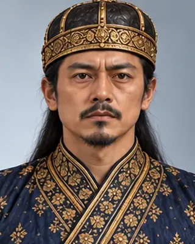

Ramdhwaj Singha (Suklamphaa)
ৰামধ্বজ সিংহ
1672–1674 · Twenty-third Ahom king

Brother of Udayaditya; poisoned in 1674 during court intrigue.
- Tai name
- Suklamphaa
- Hindu name
- Ramdhwaj Singha
- Family
- Brother of Sunyatphaa
- Fate
- Poisoned
Record confidence: medium.
Sources
Open interactive profile
Related scenes